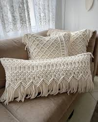

Que es?
El macramé es el arte de tejer y trenzar hilos con las manos a través de nudos, creando piezas únicas y decorativas. Además de ser una técnica artesanal, es una actividad relajante que ayuda a reducir el estrés, estimula la creatividad y mejora la concentración y la paciencia. Practicar macramé también brinda una gran satisfacción personal, fortaleciendo la autoestima y permitiéndote conectar con el arte hecho a mano
Proyectos

Probando

Probando 2